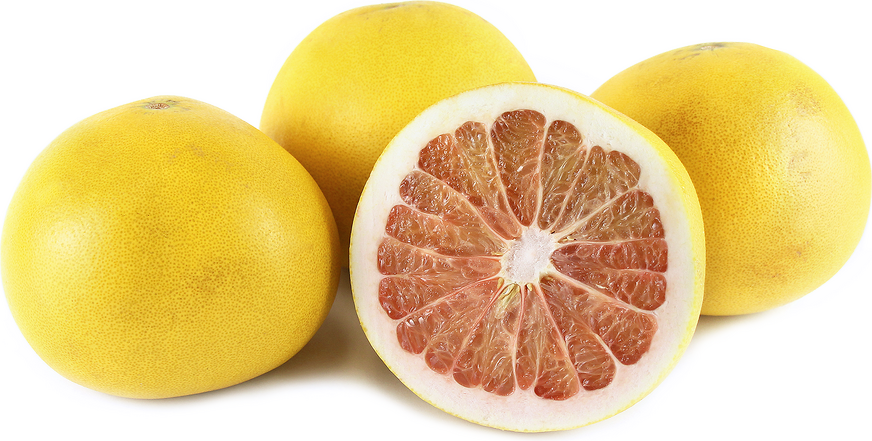
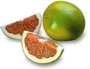
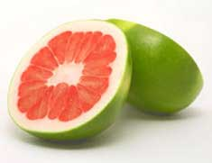
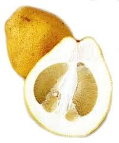
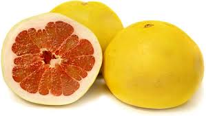
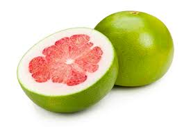

|  |
Chandler Pummeloa is a developed by crossing of 'Siamese Sweet' and 'Siamese Pink' developed at India, California and released in 1961. The Chandler pummelo ripens November to June is produces a seedless fruits if it planted in isolation. This fruit is easily segmented and can be eaten fresh or can make as salad. These are rich in antioxidant flavonoids and vitamin C. The pink squash of the Chandler pummelo variety is sweet and juicy, and it is very easily segmented for eating fresh, unlike a grapefruit. |
|  |
Hirado Buntan was introduced in 1960’s as pummelo variety. It is one of the most commerical fruit among Japanese fruits. It is yellow in color, but like a grapefruit in size and shape. The yellow-pink and bluish coloured flesh is having a less amount of juicy and being firmer. It has enoromous segments, as well as seeds, and a tough strong wall provides an interesting reliability. |
|  |
Liang Ping Yau is a large fruit among pommelo variety located in Chinese and highly prized in Southeast Asia. It looks like a pyramid shape, with thick, pale yellow that protects its red, juicy sweet squash. It is considered as the best citrus for desserts and other culinary purposes. The squash comprises of 14 segments, with many seeds. It is unequal segments create a mosaic pattern when see in a cross-section. This pleasant flavoured fruit is often eaten with a honey in the Asian tradition |
|  |
Pandan Wangi was grown in Java's Bativia district. It have a thick rind with a pale yellow-green shade and a meaty pith in colour. The peel of this fruit is rough due to its large oil glands. The blush red squash has up to 18 segments oblate to oval shape. This fruit is difficult to yield juice due to fibrous compound r but it is agreeable and sweet with a hint of lime. |
|  |
Pink Pummelo belongs to Thai group. It is a huge varitety of pummelo fruit. This fruit is sometimes sour, but considered as the best flavour among all the California pomelos varieties. The rind of this fruit is medium thick and slightly stony and looks like pink grapefruit. It have a bright yellow skin, a juicy squash, and many seeds but it is less acidic than a grapefruit. This fruit also contains antioxidants and vitamins. |
|  |
Red Shaddock was merely developed in Africa at Tambuti Estate in Swaziland. It's flavour looks like strange as it is low in acid exit a sugary sweet aftertaste. Red Shaddock squash is very similar to that of the Star Ruby, which is hard and red in color, containing many seeds with irregular shape. The peel of this fruit is yellow in colour and is smooth in nature. It can be cooked with any kind of recipe. |